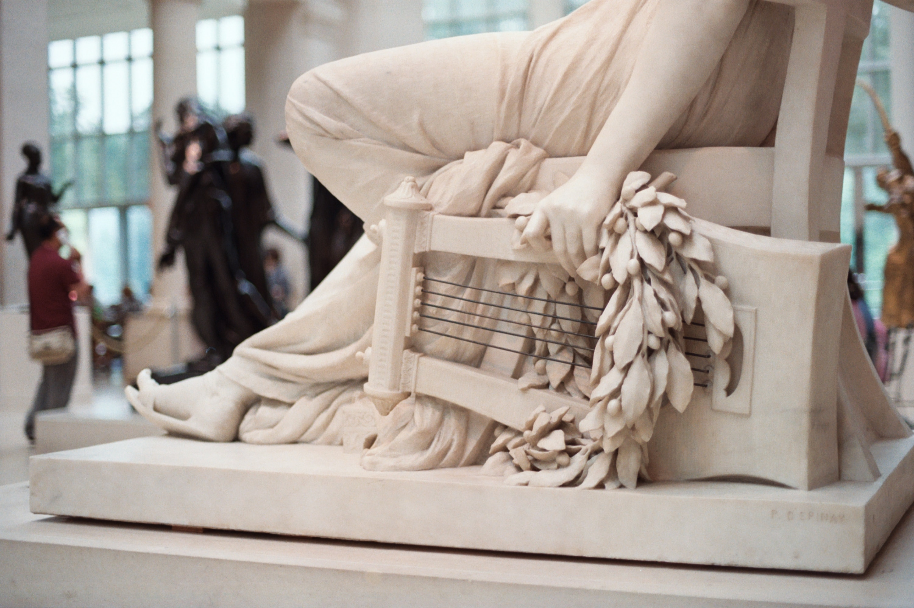

Story of music
阿波罗在古希腊神话中是太阳神，除此之外他还是艺术之神，掌管音乐、歌曲、舞蹈和诗歌，是弦乐的发明者，他弹奏的里拉琴是西方最早的拨弦乐器，
也是吟游诗人必带之物。音乐在古希腊繁荣发展，而西方的宗教、古典音乐（Classical music）正是这一繁荣的继承者。
希腊神话中记载，赫尔墨斯用龟壳、羊肠和牛角发明出了里拉琴，
并且作为礼物送给了他的哥哥——艺术、光明和音乐之神阿波罗，来平息他们之间发生的冲突。
阿波罗接过里拉琴后，立马就忘记了自己的怒气，开始了弹奏和歌唱。
所以在古代人心目中，里拉琴音乐从一开始就是与光明紧密关联的，可以带来自由的精神和心灵，表达内心深处的情感，也可以抚平情绪，给人带来宁静。
后来太阳神阿波罗将里拉琴赠送给半人神的儿子（奥菲斯）俄耳浦斯。
传说他的琴声能使神、人闻而陶醉，就连凶神恶煞、洪水猛兽也会在瞬间变得温和柔顺、俯首贴耳。
规律、平衡、明晰，古典音乐（Classical music）作为其传承者，演奏时不能任意发挥，因此我们也叫它为严肃音乐或者精确音乐，
俄耳浦斯的故事让我们思考规则和耐心，心灵的那份平静也不是随心所欲能达到的。
欣赏古典音乐，想象希腊神话中聆听音乐的动物，为爱情而演奏的俄耳浦斯，在激情和宁静中修炼心性。

自19世纪以来，音乐已成为一种与情感和戏剧联系在一起的表达方式。
歌剧，管弦乐队，钢琴和钢琴伴奏唱歌是最主要的媒体。
浪漫主义包括情感，主体性，个人主义和民族主义。
观众与表演者之间的关系更多地取决于感官体验，而不是知识分子。
传达的信息还取决于作曲家和表演者的个人想法和感受。
现在，出现了越来越多各式各样的音乐风格，让我们来看看吧。
提起现代音乐就不能不讲Blues，它是居住在美国的黑人在困苦的底层生活中创造出的音乐风格,
发源于20世纪初密西西比河的三角洲地带，早期为人们劳作时的劳动号子，后来逐渐影响了世界流行音乐的发展轨迹,
像ROCK'N ROLL(摇滚)及R'N B(节奏布鲁斯)等字眼早已为人所熟悉。
这两种音乐里所使用的Blues音阶在学校的音乐课里可能是学不到的，
但是每天你从大街上走过，从音像店里传出的声音早已使它深入你心……

在爵士乐的曲调中，除了从欧洲传统音乐、白人的民谣和通俗歌曲中吸取的成分之外，
最有个性的是“布鲁斯音阶”（关于这种音阶的结构，我们将在有关布鲁斯的部分专门介绍），
而爵士乐的和声可以说是完全建立在传统和声的基础之上，只是更加自由地使用各种变化和弦，
其中主要的与众不同之处，也是由布鲁斯和弦带来的。爵士乐在使用的乐器和演奏方法上极有特色，完全不同于传统乐队。
自“爵士乐时代”以来，萨克斯管成为销售量最大的乐器之一；长号能够奏出其他铜管乐器做不到的、滑稽的或是怪诞的滑音，因而在爵士乐队中大出风头；小号也是爵士乐手偏爱的乐器，这种乐器加上不同的弱音器所产生的新奇的音色以及最高音区的几个音几乎成了爵士乐独有的音色特征；钢琴、班卓琴、吉他以及后来出现的电吉他则以其打击式的有力音响和演奏和弦的能力而占据重要地位。相反，在传统乐队中最重要的弦乐器（小提琴、中提琴、大提琴）的地位相对次要一些；圆号的浓郁音色在管弦乐队中是很迷人的，但是对于爵士乐队来说，它的气质太温顺了，几乎无人使用。在管弦乐队中，每件乐器在音色和音量的控制上都尽量溶入整体的音响之中，
在爵士乐队中却恰恰相反，乐手们竭力使每一件乐器都“站起来”。

从20世纪50年代起，人们在广播和唱片中认识了一种新的流行音乐，这种音乐每一拍节奏都非常强烈，歌词写的也十分新鲜，一下子征服了许多美国人的心。1951年，美国克利夫兰电台首次播放这类音乐时，为了使听众感到新鲜，一位名叫艾伦·弗里德的播音员在播放前介绍时，给这种音乐命名为“摇滚乐”。1955年，一位名叫比尔·哈利的歌星演唱并录制了一张名叫《整日摇滚》（Rock Around the Clock）的唱片，
引起了极大的轰动，前后出售了1500多万张，成为世界上最畅销的唱片之一，摇滚音乐的名称便由此而来。

什么是Techno？高科技？
Techno是一种极具代表性的4/4拍电子舞曲，BPM在120-140之间（少数分支风格上至150），有着悠久的历史（在电子音乐风格中）和蓬勃的生命力。
如今，在城市每晚的电子音乐派对中，或者国内外各种大型音乐节上，以及先锋美术馆里，我们都能轻易的找到Techno的身影。
有的人觉得Techno听起来冰冷、单调、机械，像是没有感情的机器人演奏的音乐；也有的人觉得Techno灵动、幽默、能给人以无限的遐想，犹如平静海面上一层层波浪，让人心绪久久无法平静。
其实Techno就是电子音乐最早的舞曲化发展结果：传统乐器不再是音乐的必要条件，所有声音都可以成为音乐，合成器和采样的发展使得Techno彻底脱离常规乐器。
总之，Techno是一种音乐风格、也是一种文化；甚至在很多人眼中，Techno这个词一度就是电子舞曲的代名词。

- 极简主义音乐
- 环保主义音乐
- 后现代音乐
- 表现主义音乐
.......
更多等来你来探索。